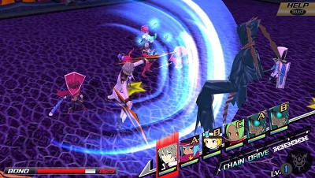

Conception II - Children of the Seven Stars
Based on the publisher of the series, Atlus, well-known for their Persona/Shin Megami Tensei series, I was curious to see how this game would turn out.
I was a bit disappointed, since the gameplay was almost similar to the Persona series itself. What made the game unique though, is the dating sim elements inside, thus giving that fresh feel to the game. The funny and interesting part, based on my opinion, would be the fact that the main character makes star children with the main heroines, through the holding of hands, and these children then help the main character and his party save the world.
Yes, the plot is almost cliche, but the game truly makes up for it, with the interesting dating sim elements, and the creating star children part, which some out there say turns them off from the game. (So if you are conservative, I don't recommend this game for you, due to the many possible connotations the game may bring out)
In short, I recommend this game for people who like Visual Novels, due to the game's dating sim elements, reminscent of Visual Novels. This game may also interest gamers who like the Persona series, due to the similar dungeon rpg elements.